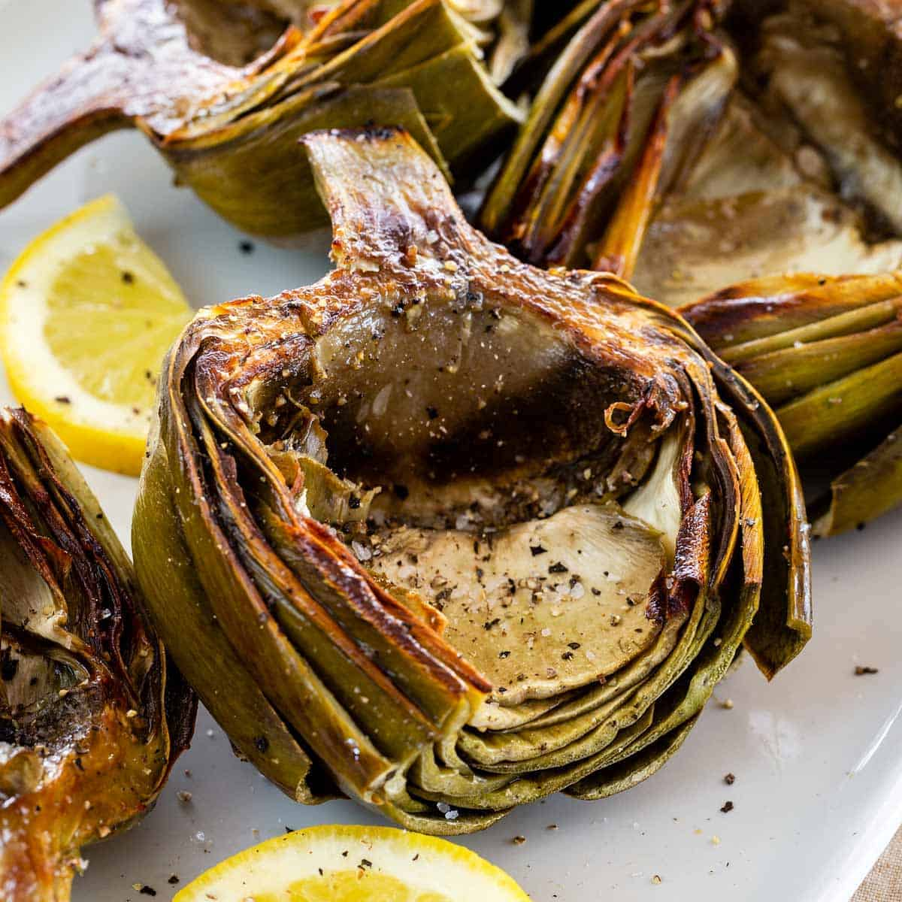

Simply Roasted Artichokes

Description
Prep Time:
5 mins
Cook Time:
1 hrs 20 mins
Total Time:
1 hrs 25 mins
Servings:
4
Ingredients
- 4 large whole artichokes, top 1 inch and stems removed
- ¼ cup fresh lemon juice
- ¼ cup olive oil
- 4 cloves garlic, cloves peeled and crushed
- kosher salt
Steps
- Preheat the oven to 425 degrees F (220 degrees C).
- Place artichokes stem-side down in a bowl and drizzle with lemon juice.
- Slightly separate the artichoke leaves with your hands. Insert a knife blade into the center of each artichoke to create a garlic clove-size space. Drizzle each artichoke with olive oil and press 1 clove of garlic into the center of each artichoke; season with salt.
- Tightly wrap each artichoke twice with heavy-duty aluminum foil; place in a baking dish.
- Bake in the preheated oven until sizzling, about 1 hour 20 minutes.
Click here to go back to homepage.